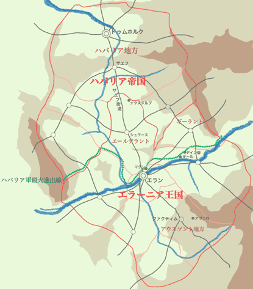

１０ ザエフ
シュラース陥落は、事実上、エラーニアが二年ぶりにエールデラント地方をその統制下に置いたことを意味した。それはすなわち、王国の領土がこの戦(いくさ)の始まる前の状態に復したということでもあった。
だが、エラーニア王宮の指導者たちは、それで王国が「元の姿」に戻ったとは考えなかったらしい。領土回復を祝う行事の準備を始めていた王都の民たちに対し、王宮は次のような布告を発し、祝賀行事の中止を命じたのだった。
「我々はまだ全エラーニア領を回復してはいない。祝賀行事は、『ハバリア皇帝』を名乗るならず者をドゥムホルクから追い出した後に行われるべきである」
二週間後、マヤたちファクティム装甲竜騎兵隊の一行は、エールデラントの北はずれ、現時点でのハバリア領との境界線近くにあるナクスドルプという小村にまで進出していた。
彼女たちはシュラース陥落後も、毎日のようにエールデラント残存ハバリア兵の掃討作戦にかり出され、ほとんど休む暇もなかった。体力には自信があるはずの隊長、ラウラでさえ「軍の上層部の連中はあたしたちのことを疲れ知らずの超人だとでも思っているのか」とぼやき始めていたし、オクタヴィも、そのスレンダーな体つきから想像されるほど脆弱ではなかったものの、やはり表情に疲労の色をにじませていた。そんなとき、上層部の命令書を携えた伝令役の兵士が、シュラースの農場に駐留している彼女たちのもとを訪れた。元来、楽観主義者のラウラは「きっと休暇命令だ」と言って、期待に手を震わせながら命令書を紐解いた。だが数秒後、隊長は命令書を放り投げて天を仰いだ。マヤがそれを拾い上げて見てみると、そこには
「ナクスドルプに進出し、そこで次の命令があるまで臨戦態勢で待機せよ」
と書かれていたのだった。
命令書を受け取ったのは昨夜、ナクスドルプへ移動してきたのは今朝早くである。更に村の人たちへの挨拶回り、付近の地形の把握、偵察など、進駐後にまず行わなければならない仕事を一通り片付け終わったのは、夕方近くだった。ラウラは隊員たちの疲労を考えて、次の任務を命じられるまでしばらくの間、一名のみが警戒当番、あとの二名は休息というローテーションを組むことにした。そして、自分が一番に警戒当番に立つからオクタヴィとマヤはテントを張って休むようにと命じた。
オクタヴィとマヤとルーミアは五、六人が入れる大きさのテントを一つ、張った。オクタヴィはその作業をやり終えると、すぐに寝袋に潜り込み、ほどなく小さな寝息を立て始めた。マヤもかなり疲れがたまっていたので、それほど眠くはなかったけれども、寝袋に入って体を休めることにした。
ところが、十分ほどしてマヤが二階から転げ落ちる夢を見て目を覚ましたとき、彼女の隣では隊長が仰向けになって大いびきをかいていた。どうやら疲労と眠気に耐えきれず警戒当番をさぼったらしい。
ルーミアはちょうどその時、ラウラの大きな体を毛布で覆おうとしていた。姉が目を覚ましたことに気づいたルーミアは、苦笑いをしながら
「『この付近に敵が潜んでいる可能性は少ないし、何かあったとしても村人たちはみな協力的なので知らせてくれる。だから大丈夫だろう』って言って、寝ちゃったの。このまま寝かせておくわ。敵襲を警戒することぐらいならあたしにだって出来るし、あたしは戦闘員じゃないからお姉ちゃんたちほどは疲れてないしね。だから、お姉ちゃんも安心して寝てて」
と言った。
マヤが再び目を覚ましたのは、夜もだいぶ更けた頃だった。テントの中を見回すと、隊長は先ほどと同様、仰向けになっていびきをかいていたが、ルーミアとオクタヴィの姿は見当たらなかった。マヤは寝袋からはい出し、テントの外に出てみた。テントのすぐ前に大きな木が一本立っている。オクタヴィはその幹にもたれかかって空を見上げていた。彼女はさすがに警戒当番をさぼったりはしなかったようだ。
マヤは「お疲れさま。警戒当番を交代するわ」と声をかけた。
オクタヴィは眠そうな目をマヤに向け、「ご苦労さま。それではよろしくお願いいたします」と、いつも通りのばか丁寧な口調で応えてから、マヤの横を通ってテントへ向かおうとした。が、そこで、何を思ったか急に振り返り、マヤの顔をまじまじと見つめ始めた。
マヤは怪訝そうな顔をして「な、何？」と言った。
「あら、ごめんなさい」オクタヴィは自分の取った行為の突飛さを自らあざけるかのように微笑み、答えた。「わたくし、寝ぼけているのかもしれませんわ。今、マヤが『お疲れさま』って言ってくれたとき、マヤの顔がわたくしの知り合いの顔に見えましたの」
「ふーん。それって、その知り合いの人があたしに似てるってこと？」
「全然。だってその子は、歳はマヤと同じぐらいですけど、男の子ですもの」
マヤはちょっと拍子抜けしたように「なんだ。男の子か」と応えた。
オクタヴィは更に自嘲的な口調で言葉を続けた。「マヤの顔を見て男の子を連想したなんて、失礼な話ですわよね」
「別に気にしてないわ」
「でも、言い訳ではございませんけど、その子、性格的にはどことなくマヤと似たところがございましたのよ。その男の子はね、ファクティムにあるわたくしの実家の近所に住んでいる幼なじみですの。と言っても、それほど仲が良かったわけではございませんのよ。小さい頃は確かにお姉さん気取りで世話を焼いてあげたりしたこともございましたけど、わたくしが女学校に入学する頃には、顔を合わせてもほとんど口もきかなくなっていましたわ。それが二年前、わたくしが軍に招集されることが決まったとき、その子はわたくしのところにやってきて、いきなり告白してくださいましたの」
「オクタヴィも隅に置けないわね。で、どう応えたの？」
「お断りしました」
「タイプじゃなかった？」
「嫌いではございませんでした。いえ、どちらかと言えば好ましいと思っていたかも知れません」
「じゃあ、どうして？」
「わたくしが軍に招集されている二年間、ずっと待っててくださいなんて申し上げる勇気は、わたくしにはございませんでした。でも、もしかしたら、いえ、たぶん、彼はわたくしが本心からお断りしたのではないことに、気づいていたのではないかと思います」
「オクタヴィの出征義務期間って、確かあとひと月ほどで終わるんでしょ？その子、きっとファクティムでオクタヴィの帰りを首を長くして待ってるんじゃない？」
「まさか。あのくらいの歳の男の子にとって、二年という時間は短くはございません。それにわたくし、出征義務期間を終えても軍を辞めるつもりはございませんから、彼がどう思っているにせよ、会えるのはまだ先の話ですわ」
「え？故郷へ帰らないの？」
「ええ。もう少し、ラウラとマヤとルーミアと一緒に仕事がしたいなって思って」
マヤは「そう」とだけ応えたが、心の中では、一緒に仕事をしたいと言ってもらえたことを嬉しいとも感じていたし、少し誇らしいとも思っていた。
オクタヴィは口に手を当て、あくびを噛み殺しながら「では、わたくしは休息に入らせていただきます」と言った。マヤが改めて「お疲れさま」と声をかけると、オクタヴィはくるりと背と向けテントのほうへと歩いていった。
マヤはさっきオクタヴィがやっていたように、木の幹に背中を預けて夜空を見上げてみることにした。
今日、空に浮かんでいる月は「三日月」だった。マヤを見下ろすのは、餅をついている愛嬌たっぷりのウサギではなく、無愛想なのっぺらぼうである。かつて山矢健太が NASA の宇宙船の写した月の裏側の写真を目にしたとき、彼はそののっぺりした表面に、言い知れぬ不気味さを感じたのだった。だが、一年前にこちらの世界に飛ばされて以来、何度となくあののっぺらぼうを見上げているうちに、そこには着飾った華麗さとは違った、シンプルな優美さがあることに気づき始めた。今ではむしろ、出しゃばりなウサギが呪わしいとさえ思えるようになった。
やがて、マヤの脳裏に、この一年間に彼女の身の周りで起こったいろいろな出来事が浮かんできた――思い返せば、最初はショッキングだと思っていたことも、今となってはいい思い出でしかない。異世界に飛ばされたことも、女になってしまったことも、竜の操縦をやるはめになったことも。そして軍に入り、数々の戦いをくぐり抜け、エース竜騎兵と呼ばれ、挙げ句、最前線のこんな鄙びた村に放り出されたというのに、あたしは少しも違和感を覚えていない。あまりにも色々な経験をしすぎて、精神的ショックを感じにくい体質になってしまったのだろうか？いや、たぶん違う。山矢健太という男の子はどちらかというと繊細な精神の持ち主だった。それはマヤになってからも変わっていない。あたしが回復不能なほどの精神的パニックに陥ることなくここまでやって来れたのは、きっと……
そのとき不意に、マヤの背後で彼女を呼ぶ声がした。
「お姉ちゃん」
マヤは振り返ろうとしたが、背後には木の幹があったため、一歩横にステップを踏んでから幹の向こう側を見通した。声の主、ルーミアは、マヤの立っているところへ、テントとは別の方向から歩み寄ってこようとしていた。マヤは心の中で、先ほどの独り言の続きを言った――あたしがここまでやって来れたのは、きっとルーミアがそばにいてくれたから――
ルーミアはマヤのすぐそばで立ち止まり
「ビュアラを引き取ってくれる人、見つかったわ」
と言った。
マヤは意外そうに
「あ、探しに行ってくれてたんだ。ありがとう」
と応えた。
ルーミアはどういたしましてと言う代わりに、マヤが先ほどまでもたれていた木の幹にもたれかかった。
マヤは「でも、よく憶えてたわね。きのう、ちょっとそんな話をしただけなのに」と言いながら、ルーミアと肩を並べるように、再び幹にもたれた。
「忘れないわよ。あたし、お姉ちゃんの言ったことは絶対に忘れないもの」
「絶対に？」
「うん」
「百パーセント？」
「うん」
「ほんとに？」
「約百パーセント。正確には九十六パーセントぐらい」
「何それ」
二人は顔を見合わせ、くすくすと笑った。くだらないセリフを真剣にやりとりしている自分たちが滑稽に思えたからである。
「そういえば、さっきね」マヤは言葉を続けた。「オクタヴィに、男の子に見間違えられちゃった」
ルーミアはいかにも不満そうに、大げさに声を荒げて「えーっ、ひどい。お姉ちゃんのどこが男の子に見えるって言うの？」と言った。
ところがマヤは、それには応えず、ちょっと寂しそうな顔をして、自分自身の言葉を続けた。「あたし、二週間前にも同じようなことを言われたわ」
「えっ」ルーミアは、姉の口調と表情から、会話の流れが先ほどの冗談とは違う方向へ進み始めたことを悟った。「二週間前っていうことは、もしかして……ナターシャ？」
マヤは静かに「ええ」と応えた。
「そう」ルーミアは言葉を選ぶためにちょっと間を置いてから言った。「気の毒に、って言ってあげるべきかな？」
「相手がどんな人であっても、そう、たとえあたしの魂を抜いて体だけハバリアに連れてゆこうなんて、とんでもないことをやろうとした女スパイでも、死ぬのはやっぱり気の毒なことだと思う」
「きのうのユルグでの掃討戦のときに、ハバリアの敗残兵たちと一緒に死んだって言ってたわよね」
「ええ。でも、きのうはルーミアにそれ以上、詳しい話はしてあげられなかったわね。あたしたちがユルグから帰還したあと、すぐにここ、ナクスドルプへの移動を命じられてしまって、すごく慌ただしかったから」
「そうね」
「ねえ、いま話してもいい？きのうの話」
「ええ」
マヤは話し始めた。
一昨日、マヤたちファクティム装甲竜騎兵隊の三名は、ユルグという小さな町に籠るハバリア敗残兵の掃討作戦を援護する任務に就くよう、上官であるアイリゲン大佐から命令を受けた。その際、大佐から知らされた情報によると、ユルグはエールデラントにおけるハバリア軍の最後の組織的抵抗拠点であり、この敵さえ片付けてしまえば今後、エールデラント内では単発的なテロ行為があったとしても組織立った敵による軍事攻撃はなくなるだろうとのことだった。
マヤたちは、この二週間ほどの間に参加した掃討戦がどれも困難な戦いだったことから、この最後の抵抗は今まで以上の激戦になるだろうと覚悟して出撃した。ところが、ユルグに着いてみると、敵の大半はすでに投降しており、ほんの三十人ほどがユルグ郊外の富豪の屋敷に立てこもっているにすぎないことを知らされた。
現地の司令官は説明した。「こちらの魔道士兵力で屋敷の屋根に穴をあけて、きみたち竜騎兵に上空から油を注いで火を放ってもらえば、頑丈な石造りのあの屋敷の中に潜んでいる敵でもイチコロだ。だが、もうほとんど抵抗力を持たないあのような敵をなぶり殺すところを町の住民に見られたら、今後の統治政策に影響が出る。そのあたりのことは軍の上のほうからきつく言われてるんだよ。それに」司令官はそこで、少し離れたところで心配そうに屋敷を見つめている小太りの中年男をあごで指し示した。体中を華美な貴金属でごてごてと飾り立てた、見るからに成金そうな男である。「この町の『実力者どの』が屋敷を壊されのは絶対に嫌だとダダをこねて……もとい、おっしゃってもいるのでね。まあ、敵の連中はもう何日もろくに食い物にありついていないはずだから、こうやって遠巻きに包囲して降伏勧告を続けていれば、空腹に耐えかねて白旗を揚げるか、さもなければあと数日で飢え死にするだろう」
ラウラは司令官の説明と現在の情勢を自分なりに分析し、この場に竜騎兵戦力は不必要との判断を示した。その上で、アイリゲン大佐にシュラースへの帰還を許可してほしい、ついでに休暇も欲しいと具申する手紙をしたため、伝令兵に届けさせた。と言っても、伝令兵が手紙をシュラースの司令部にいる大佐に届け、大佐がそれを読んでしかるべき決定を下し、別の伝令がその内容をマヤたちに伝えてくれるには、どう考えても半日以上の時を要する。軍の命令でここに派遣された以上、マヤたちは勝手に帰還するわけにもいかないので、とりあえず、適当な場所で野営してアイリゲン大佐からの連絡を待つことにした。
事態が急変したのは、翌朝の日の出前だった。投降したと思われていたハバリア兵たちが、収容施設で一斉に蜂起し、それに呼応して、町に潜んでいたハバリア兵がハバリアに協力的な住民とともにエラーニア軍将校の宿泊施設を襲撃し始めたのである。
マヤが異変に気がついたときにはすでに町は大混乱だった。一部のハバリア兵がエラーニア兵の軍服を奪ってエラーニア兵になりすまし、エラーニア将校に近づいて殺害するという手口をとったことが混乱に拍車をかけた。エラーニア兵たちは疑心暗鬼にかられ、自分の身を自分で守ることこと以外、何も出来なくなった。
特にエラーニア兵たちを震撼させたのは、ハバリア兵がユルグじゅうの白魔道士を、エラーニア軍属か否かを問わず、一人残らず殺害してしまったことである。こちらの世界の兵士がマヤのもといた世界の兵士より勇敢に戦えるのは、腕の一本や二本を失っても男性白魔道士が再生してくれる、命を失っても女性白魔道士が魂を呼び戻してくれるという安心感があるからである。であるがゆえに、一旦、白魔道士のサポートを受けられないという事実を知らされると、却って深刻なパニックに陥ってしまうのだった。
今やエラーニア随一の精鋭部隊と見なされつつあったファクティム装甲竜騎兵隊にも、この混乱を回避することは出来なかった。というより、むしろもろに巻き込まれたと言ったほうがよい。マヤたちが野営テントのすぐそばに駐竜してあったピムたちのもとへ向かうと、そこにはすでに敵の魔の手が伸びていた。敵は竜騎兵を、将校や白魔道士と並んで優先的に排除しなければならない兵力と見なしていたのである。不幸中の幸いだったのは、敵がマヤたち竜騎兵を直接狙わず、ピムたち竜のほうを狙ってきたことである。おそらく暗殺術に長けた敵の兵はみな、将校や白魔道士殺害のほうに回されていたからであろう。見ると、ピムのそばに水色の服を着た女が一人、立っており、ピムの頭を優しくなでながら、ピムの口に怪しげな液体の入った瓶を押し込もうとしていた。毒なのか、眠り薬なのか、それともピムの精神をおかしくさせる薬なのかはわからなかったが、いずれにせよ、マヤの目にはピムがその液体をおいしそうだと思っているようには見えなかった。
マヤは
「ピム、逃げて」
と叫んだ。
するとピムは口から瓶を吐き出し、瓶を押し込もうとしていた女を振り払うように首をもたげ、翼を広げて羽ばたき始めた。女は風圧でその場に昏倒したが、ピムはそれを無視して上空へ舞い上がった。
ラウラとオクタヴィもその時、同じように自分の竜に上昇を命じた。彼女たちの竜もそれぞれ別の工作員にピムと同じ仕打ちを受けそうになっていたのである。竜が飛び立つとき風圧で昏倒したそれらの工作員は、マヤたちが武器を構えてにじり寄ってくるのを見ると、慌てて起き上がり、脱兎のごとくその場を走り去った。あとにはピムに液体を与えようとしていた女だけが横たわっていた。
ラウラとオクタヴィはそのまま工作員を追撃した。だが、マヤは横たわっている女が気になり、小剣を構えたまま更に二、三歩にじり寄った。それでも女は動く気配を見せなかったので、マヤは剣を下ろし、しかし気は緩めずにゆっくり歩み寄り、女の顔を覗き込んだ。
「ナターシャ！」
マヤは思わず叫び声をあげた。
眠ったように目を閉じていたナターシャは、マヤの声に呼び起こされ、静かに目を開いた。
「マヤ……」
マヤは地面に膝をつき、ナターシャの体を抱き起こした。
「ナターシャだったなんて」
ナターシャは弱々しい声で「やっぱりさっきのはマヤの相棒のピムだったのね。きっとそうだと思った。マヤのにおいがしたような気がしたから」と言った。
マヤはナターシャの声があまりにも弱々しいことを不思議に思った。翼の風圧で倒れただけでこんなになってしまうはずないからである。マヤは、他にどこか悪いところがあるのかとナターシャの体を見回してみた。ナターシャの着ている水色のジャケットの右の脇腹あたりが徐々に赤く染まり始めているのが、すぐに見つかった。
「ひどい怪我をしているじゃない」
「ここへ来る間にエラーニア兵と戦闘になって、そのとき刺された」
「白魔道士を呼んでくる」
「無駄よ。この町にいた白魔道士はみんな死んだわ」
「なぜ？どうしてハバリア軍はそんな惨(むご)いことをしたの？第一、白魔道士がいなくなったら、こうやって味方が傷ついたときに誰も治せないじゃない。自殺行為だわ」
「その通りよ。この作戦の目的は一人でも多くのエラーニア人をあの世に道連れにすることだから」
「そんなバカなことって」
その時、ナターシャは「うっ」と苦しそうにうめき声を上げた。
「ナターシャ、しっかりして」
「マヤ……あなた、優しいのね。あなたにあんなひどいことをしたあたしを……気遣ってくれるなんて……」
「しゃべらないで。この町に白魔道士がいないなら、シュラースからルーミアを連れてくるから」
「もう……間に合わない……わ。でも……よかった。最後に……マヤに会えて。会える気が……してた。きのう……赤い装甲を付けた……竜騎兵が……この町に……舞い降りてくるのを……見つけたから……志願したの。竜に……毒を飲ませる……役目を。マヤに……会いたかったから。大好きな……マヤに……」
「ナターシャ……」
「この間……シュラースで……マヤに……『一緒にハバリアに来て』って……頼んだ時……マヤは……拒否したけど……それは……正解だったのよ。マヤを……もといた世界に……帰すつもりなんか……最初から……なかった。みんな……嘘だったの。でも……信じて。あたし……本当に……マヤのこと……好きだった。マヤの……魂を……抜いてしまったあとで……すごく……後悔した。自殺しようかと……思った。だから……マヤが助けられて……魂を取り戻せたって……あとで知らされて……すっごく……すっごく……嬉しかったの」
「ナターシャ、わかったから、もうしゃべらないで」
「マヤが……異世界から来た……男の子だって……ことは……誰にも……話して……ないから……安心……して。
罪滅ぼしの……つもりじゃないけど……これだけは……言っておきたくて。よく……聞いて。ドゥムホルク……宮殿の……尖塔の……最上階に……異世界への……門を……開く……装置が……あるの。それを……使えば……元の……世界に……」
ナターシャの体は断末魔の痙攣を始めた。
「ナターシャ！」
「ビュアラのことを……お願い……」
その言葉を最後に、ナターシャは息を引き取った。
マヤはナターシャの体をそっと地面に置き、胸の前で手を組ませてあげた。そして自らも胸の前で手を合わせ、この悲しき運命の持ち主の冥福を祈った。
目を上げると、少し離れたところで子犬が一匹、気持ち良さそうにうたた寝をしていた。ナターシャがかつてエランで怪我の手当をしてあげてそのまま飼っていたあの子犬、ビュアラだった。こんな戦場のど真ん中にナターシャが連れてきたのだろうか。それとも、勝手についてきたのだろうか。主人の死にも町の混乱にも全く動じることなく悠々と眠り続けるあの肝っ玉の太さを考えれば、どちらもあり得ることだ。ナターシャは以前、マヤが一番の友達だと言っていた。それがもし本当だったとすれば、ナターシャはマヤと別れなければならなかった寂しさを、ビュアラを片時も離さないことで紛らわそうとしていたのかもしれない。
町の混乱は昼前には沈静化に向かった。暗殺を逃れたエラーニア将校たちが指揮系統の立て直しを図ったからである。秩序を取り戻すと、エラーニア軍は正規軍としての強さをいかんなく発揮し始めた。逆にハバリア敗残兵たちは、みるみる烏合の衆の弱さを露呈し始めた。マヤたちファクティム装甲竜騎兵隊も、ハバリア兵へ対地攻撃を加えたり、孤立してしまったエラーニア兵に上官の命令を伝えて指揮系統を確立したり、近隣の町から白魔道士を空輸する役目をになったりと大活躍だった。
昼過ぎに戦闘は終わった。エラーニア側もハバリア側もかなりの数の戦死者を出していた。特にハバリア軍はほぼ全員が死亡していた。『一人でも多くのエラーニア人をあの世に道連れにする』というハバリア側のもくろみは、まんまと成功したことになる。白魔法が普及し始めて以降に限っていえば、これほどの戦死者を出した戦いは、歴史的にもあまり例がないのだという。
マヤはビュアラを連れて、ラウラとオクタヴィとともにルーミアの待つシュラースの農場への帰途についた。彼女たちが無事帰還したのは夕方、そしてほどなくナクスドルプへの移動を命じられたのだった。
「『異世界への門』か」
マヤの話を聞き終わったルーミアは、半ば独り言のようにつぶやいた。
「本当のことなのかしら」
マヤは応えた。「本当だと思う」
「だとすれば……、だとすればお姉ちゃんはどうするつもり？」
「そこを目指すわ。ドゥムホルク宮殿の尖塔の最上階にあるそこを。元の世界へ帰るために」
「簡単なことじゃないわよ」
「エラーニア王宮の指導部が、ドゥムホルクを奪い返すまで戦(いくさ)はやめないって言ってるみたい。ひょっとしたら軍務としてそこへ行く機会を与えられるかもしれない」
ルーミアはちょっと表情を曇らせ、「それなら……そういう可能性もあるかもしれないわね」と言った。
マヤは何も応えなかった
彼女たちは今、一本の木の幹に肩を並べてもたれかかっていた。と言っても、その幹は直径が八十センチほどしかないため、体を同じ方向に向けてもたれることはできない。つまり、マヤは幹の南面にもたれて南の空を、ルーミアは南東の面にもたれて南東の空を見上げていた。
次に口を開いたのはルーミアだった。沈黙があまりにも長いので、何となく不安になってきたからである。彼女はもたれていた体を起こし、姉の顔を覗き込んで「お姉ちゃん？」と声をかけた。
マヤは空を見つめたまま、ぼろぼろと涙をこぼしていた。
ルーミアは驚きのあまり声を出すことが出来なかった。
マヤは視線を夜空に固定したまま、言った。「ねえ、ルーミア。泣くのは、おかしいことかな？」
「え？」
「あたしの魂を抜いて死んだも同然の状態にした人のために涙を流すのは、おかしいことなのかな」
「お姉ちゃん……」
「ねえ、あたし間違ってる？彼女を、ナターシャを憎まなきゃだめ？」
「…………」
「あたし、ナターシャのことが憎めないの。あんなにひどいことをされたのに、憎めないの。彼女のことが好きだった。本当に大好きだったから」
ルーミアは無言のままマヤの肩を抱きしめた。
するとマヤは、我慢しきれずルーミアの胸にすがりついた。「あたし、男の子だったときは泣いたことなんて一度もなかった。サーラが死んだときだって、涙なんか一粒も流さなかった。なのに、なのに、今はどうしても涙が止まらないの。悲しくて悲しくて仕方がないの。どうすることも出来ないの」
ルーミアは、包み込むように言った。「どうもしなくてもいいのよ、お姉ちゃん。お姉ちゃんは間違っていない。これでいいの、このままで。このまま、泣けるだけ泣いたらいいわ」
「ルーミア」
それからしばらくの間、マヤはルーミアの胸の中で、肩を震わせて泣いた。ルーミアは、姉の中から溢れ出る悲しみの感情をすくい取るかのように、優しく姉の頭を撫で続けた。
月は、そんな姉妹の様子を、無表情のままじっと見守っていた。
やがてマヤが顔を上げた時、その目に涙の跡はあったが、もはや瞼から涙が溢れ出してはいなかった。表情も、晴れ晴れにはほど遠かったが、どことなく安らぎを帯びたものになっていた。
マヤはルーミアの目を見つめた。ルーミアは小さなうなずきでそれに応えた。さほど意味のあるうなずきではない。だが、マヤはなぜか、それですべてを許されたような気がした。
と、その時。
彼女たちのすぐそばで
「あのー」
という、か細く頼り無げな男の声がした。
マヤとルーミアは口から心臓が飛び出しそうなほどびっくりして、その声の出所とおぼしき方向に目をやった。そこに立っていたのは、エラーニアの軍服を着た、青白い顔の若い男だった。
「お取り込み中のところ申し訳ありませんが、こちら、ファクティム装甲竜騎兵隊の野営地ですよね？」
マヤとルーミアがそうだと答えると、男はびしっと姿勢を正して敬礼し
「アイリゲン大佐からの命令書をお持ちしました」
と言った。
マヤはその伝令役の兵士をその場に待たせておいて、ラウラたちが寝ているテントに戻り、声をかけた。目を覚ましたラウラとオクタヴィは、マヤから起こされた理由を告げられ、だるそうに体を起こして寝袋からはい出した。テントから出てきたラウラに、兵士はいま一度敬礼し、命令書を手渡した。ラウラは受け取った命令書を開いて眠そうな目でその文字を追った。やがて命令書を持つ彼女の手はわなわなと震え始めた。
「あたしたちを殺す気か！」
ラウラは目の前の兵士をそう言って怒鳴りつけた。
兵士は泣きそうな顔をして「自分にそう言われましても困るのですが」と言った。
マヤは半ば呆然としているラウラの手から命令書を取り上げて、十分に月明かりを受けるように大きく広げ、ルーミアとオクタヴィとともに読んだ。そこには
「エラーニア王国軍は明日五月十六日、日の出とともにハバリア地方への進軍を開始する。ファクティム装甲竜騎兵隊はその際、ザエフ街道を北進する主力部隊の右側面の制空を確保するよう努められたし。以上」
と書かれていた。
オクタヴィは「あら。昨日、エールデラントの掃討が終わったばかりですのに。慌ただしいですわね」とつぶやいた。言葉遣いはいつもの通りばか丁寧であったが、口調には、彼女にしては珍しく若干の刺々しさがあった。
ラウラは「ったく。アイリゲン大佐は何を考えてるんだ。こっちの体のことも少しは気遣えってんだよ。か弱い乙女なんだぜ」とぼやいた。と思ったら、急に恥ずかしそうに後ろ頭をかき始めた。いま自分がいかに恥ずかしいセリフを言ったかに、言ってしまってから気づいたのである。
一方、マヤは他の二人の竜騎兵とは違ったことを考えていた。エラーニア王国軍が進む先にはドゥムホルクが、そしてその宮殿の尖塔にはきっと異世界への門を開く装置があるはずである。彼女は自分の思いに共感してもらいたくて、妹に希望に満ちた力強い視線を送った。ルーミアはちょっと複雑そうな表情をしていたが、マヤの視線に気づき、同意を示す視線を送り返してきた。
すると、伝令役の若い兵士がまた
「あのー」
と、消え入りそうな小さな声で話しかけてきた。
ラウラは今にも兵士の胸ぐらをつかみそうな勢いで「なんだ。まだなんか文句があるのか？」とまくしたてた。
兵士は半べそをかきながら「い、いえ。こちらの隊長殿にアイリゲン大佐からの伝言をお伝えしようと思いまして」と言った。
「伝言？あたしに？」
「は、はい。お伝えします。『今度の作戦が一区切りついたらファクティム隊に必ず休暇を与えてやってほしいと上層部に掛け合った。もう少しがんばってくれ。愛するラウラへ』とのことであります。一軍人が部下のために兵力の運用方法に関して上層部に口を出したことがばれたら問題なので、文書にはせず、自分に口頭で伝えさせると仰せでした」
その途端、ラウラは破顔して両腕で兵士をがばっと抱きしめた。そして
「そうだよ、そうだよ。その知らせが聞きたかったんだよ。おまえはなんていいやつだ。あたしはおまえを愛してやりたいよ」
と言って、胸に兵士の顔をぎゅうぎゅう押し付けた。
兵士はラウラの胸の中で照れくさそうに苦笑いしていた。

ハバリアへの侵攻作戦が始まった。もっとも、公式的な呼称はあくまでも「ハバリア地方奪回作戦」である。そこには、二十年前のハバリア独立という歴史的事実を、今更ながらなかったことにしようとするエラーニア王宮の意図が現れていた。
エールデラント奪回を完了したばかりのこの時機にエラーニア軍が時を置かずハバリアへの侵攻を開始したのは、自軍の攻撃準備が十分に整うのを待つことよりも、防衛体制が整う前の敵を少数の精鋭部隊で叩くことのメリットを重視した結果だった。その意味では、軍上層部が精鋭部隊の一つであるファクティム隊をこの作戦に投入したのは当然の選択であった。それに加え、あとひと月ほどするとハバリア地方に雨期が到来し軍事行動が困難になることも、上層部が作戦開始を急いだ理由の一つだった。
ファクティム隊は命令の通り、ザエフ街道を北へ進軍する主力部隊の右側面を警戒する任務に就いた。ハバリア側の抵抗は弱かった。敵の本国に侵攻しつつあるのが信じられないほどだった。特に竜騎兵力は質の低下が目についた。エラーニア軍の侵攻を迎え撃つ準備がまだできていなかったのは誰の目にも明らかだった。エラーニア軍上層部の取った作戦の妥当性が証明されたわけである。
それにしても、ギール戦の頃まであれほど潤沢だった敵の竜騎兵力はいったいどこに行ってしまったのだろう。ギール戦の折に戦力を使い果たしたといっても、それからもう三ヶ月以上、経っている。兵力を再建するには十分な時間があったように思える。マヤはある日の任務を終えて帰還したあと、隊長にそのあたりの疑問をぶつけてみた。
ラウラは答えた。「竜ってのはもともと南の暖かい地方に棲んでいる生き物なんだ。北の地方にも竜がいないわけじゃないが、成長も遅いし体もあまり丈夫じゃないから戦闘には向かない。だから、この戦(いくさ)が始まった当初は、エラーニアよりも北にあるハバリア帝国がどうやってあれだけの数の竜騎兵力を簡単にそろえることができたのかみんな不思議に思ったものさ。『ヤグソフの異呪』って話が出始めたのはその頃だよ。怪僧ヤグソフは、子竜を短期間のうちに丈夫で敏捷な竜に成長させる術が使えるって噂だ」
「じゃあ、最近、竜騎兵力が不足し始めたのは……？」
「ヤグソフのおっさんが休暇でも取ってんじゃないの？働き過ぎで疲れたからって、あたしたちみたいに。ははは、んなわけないか。……あーあ、早いとこ作戦に一区切り付けて休暇をもらいたいよな……」
ラウラの答えは、マヤの疑問の解決にはあまりならなかったが、ヤグソフなる怪僧がハバリアの政治面だけでなく軍事面にも大きな力を発揮していることはわかった。
侵攻四日目にして、エラーニア軍は早くもハバリア南部の中心都市、ザエフまでの道のりの半分を踏破していた。エールデラント奪回作戦時以上の進撃ペースである。兵士たちの間には楽観ムードが漂い始めた。ザエフは、最終目標であるドゥムホルクまでの道のりのちょうど中間地点にある。たった四日で全体の四分の一にあたる地点まで来れたということは、このペースを続ければ雨期が訪れるまでにハバリアの首都ドゥムホルクを攻略し、ひょっとしたら戦(いくさ)を終わりにすることが出来るかもしれないのである。
そのときマヤの心にあったのは、楽観というよりも、期待に胸躍るわくわく感とでもいうべきものだった。ドゥムホルクは、兵士たちにとっては単なる軍事目標だが、彼女にとっては彼女自身の存在意義に関わる重大目標である。ピムを高空に上昇させ、北の方向を見渡せば、街道の先にはすでにザエフの町が、そして更にその先にはハバリア南部と北部を隔てるなだらかな山脈が見える。そして、その山の向こうにはその重大目標がある。
だが、マヤたちが北へ進むに連れ、ルーミアの表情は曇りがちになった。その原因は、本人に訊くまでもなかった。マヤがドゥムホルクに近づくということは、彼女が向こうの世界に帰る日が近づくことを意味する。それはすなわち、マヤとルーミアが永遠に別れなければならないかもしれない日が近づくことをも意味している。ずっと以前から、いつかそういう日が来るのだろうという漠然とした思いはあった。それが、ナターシャに異世界への門のことを聞かされた瞬間、急に現実味を帯び始めたのである。
ルーミアは、彼女自身がこのことについてどう思っているのか、マヤには何も語らない。他人に対する気遣いを片時も忘れないルーミアの性格を考えれば当然だろう。向こうの世界へ帰りたいというマヤの気持ちを理解してあげられる人間は、この世にたった二人、マヤの正体を知っているルーミアとルーミアの父だけなのだから。ただ、他の問題ならそうやって他人を気遣っていることさえ表に出すことのないルーミアも、このことに限ってはさすがにそこまで自分を制御しきることはできず、それが表情の曇りとなって現れたらしい。
マヤとしても、もしルーミアに二度と会えなくなるとすれば、それはあまりにもつらい別れである。しかし、そのこと自体よりも、ルーミアにつらい思いをさせなければならないことのほうがつらかった。マヤは向こうの世界に帰ることによって、いまこちらに持っているものを「失う」一方、どのようなかたちにせよ元の世界での生活を「得る」ことができる。だが、ルーミアはマヤという存在をただ「失う」だけなのである。
マヤは考えた。ひょっとしたら、異世界への門を使えばあちらの世界とこちらの世界を自由に行き来することができるようになるだろうか？ルーミアの笑顔をいつでも見に来られるのだろうか？いや、自分はこちらの世界に飛ばされたときに死にかけた。異世界への門を通ることが自分の家の門をくぐることと同じぐらい容易なことだとは思えない。
もっとも、別れがつらいからといって元の世界へ帰る決心を変えるつもりは、マヤにはなかった。自分がこの世界にとって異分子であるという精神的な理由。こちらの世界とあちらの世界の物質構造の違いが何かとんでもない破滅的な現象を引き起こすのではないかという科学的な理由。そして、美玖との約束をまだ果たしていないという感情的な理由。これらは今までに何度も考えたことである。そして先日、そこに新たな動機――ナターシャが命と引き換えにもたらしてくれた情報を無にすることはできない――が加わった。もはや、このザエフ街道をドゥムホルク宮殿めざして北上する以外に進むべき道はないとマヤは思っていた。彼女にとって、「元の世界に帰る」ということは、単にこちらの世界からあちらの世界へ戻るということだけではなく、元いた自分の居場所に戻り、そうすることで異世界に飛ばされるという異常な体験をいわば「リセット」することをも意味していたのである。
その一方で、彼女をこちらの世界に居続けたいと思わせる、逆の動機も新たに生まれていた。それは、言うまでもなくジュートという存在である。半月ほど前、シュラースの農場の納屋でルーミアと和解したあと、マヤはジュートと甘い一夜を過ごした。その時にその動機は生じた。しかもその後、手紙でしか彼と触れ合うことができないもどかしさ中で、ますます大きくなっていった。それでもマヤは、そんな甘い想いの中に自分自身が埋没してしまうことを許さなかった。まだ女になったばかりの頃、脳に宿る女の本能に命じられるままいつか男を求めるようになるのだろうかと恐怖したことを思い出し、そう、この想いはマヤの本能なのだ、山矢健太の意志ではないのだと自分自身に言い聞かせ、無理矢理納得しようと努めた。
エラーニア軍の進撃ペースも、そんな彼女をドゥムホルクへといざなうかのように、快調さを維持していた。街道を進む地上軍の兵士たちは、敵の抵抗があまりに少ないので、ハバリアにピクニックに来ているのと勘違いしそうになった。ファクティム隊も、ほどなくナクスドルプからもっと前線に近い村に拠点を移し、そこから他の竜騎兵隊とともにザエフの空襲を開始したが、ドゥムホルク攻略の最大の障害と見なされている拠点都市に攻撃を加えているというのに、敵の反撃は軽微だった。今やエラーニアの軍関係者の間では、勝利できるかどうかではなく、勝利がいつになるのかが最大の関心事だった。
そんな中、エラーニア軍の精鋭部隊の一つであるエラン第二竜騎兵隊が壊滅したとの知らせが駆け巡った。進撃を開始して一週間後、地上軍の先鋒隊がザエフの門前にまで到達した時のことだった。その突然の知らせを受け、軍上層部はとりあえず事実関係を確認するために情報収集を試みたものの、エラン第二竜騎兵隊の隊員三名が全員戦死していたため、確かな情報を集められず、壊滅の真相を明らかにすることはできなかった。上層部は結局、今回の一件は慢心していたエラン第二隊が敵の弱小部隊に足もとをすくわれたとことが原因と結論付け、各部隊にもう一度、気を引き締めるよう訓戒したにすぎなかった。
だが、一番慢心していたのは上層部自身であった。数日後、主力部隊が続々とザエフ郊外に到着し始めた頃、今度はアマルータ装甲竜騎兵隊が壊滅したとの報告が入ったのである。ただ今回はザエフ付近にまで自軍の白魔道士が進出していたため、アマルータ隊の竜騎兵の一人が命を救われ、彼女の口からことの真相が明らかにされた。
「敵の竜騎兵の中にすごいのがいる」
翌朝、エラーニア王国軍ハバリア遠征隊総司令部にファクティム装甲竜騎兵隊、ガユス装甲竜騎兵隊、エンケ装甲竜騎兵隊の隊員計九名が集められた。これが現時点でハバリア遠征隊に配属されているすべての竜騎兵力である。ハバリア遠征隊竜騎兵部隊の総指揮官に任じられていたアイリゲン大佐は、彼女たちに
「今までは、各隊ごと個別に空襲、哨戒等の任務を行ってきたが、強力な敵の存在が確認されたことから、警戒のため当分の間、この三隊は一体となって行動することとする。本日はザエフに無理な空襲を加えることは差し控え、ザエフ前面に友軍地上部隊が展開するのを援護する任務に就くこと」
と指示した。
マヤはアマルータ隊が遭遇したという「すごい敵」がどのようなものなのか気になった。マヤたちファクティム隊はシュラース戦の折、とてつもなく強いがなぜか無表情な、不思議な敵に出会っている。もしかしたら今回の敵はその時の敵と関連があるのだろうかと思ったのである。ありがたいことに、ラウラがマヤの考えを代弁してくれた。
「なあ、ウィル。あたしたちがこの間、シュラースですごい敵と遭遇したって報告しただろ？今回の敵は、その時のと同じやつじゃないのか？」
ウィル・アイリゲン大佐は、他の隊の隊員たちも同席している作戦会議の場でラウラがため口を聞いたことを咎める意味を込めて、咳払いを一つした。そして、
「敵兵力は目下、分析中である。詳細がわかり次第、諸君にも知らせる」
と答えた。
竜騎兵たちはその後、すぐさま与えられた任務に就いた。
午前中は何事も起こらなかった。「すごい敵」以外の敵の竜騎兵も、下手に出撃して消耗することを恐れているのか、全く姿を見せなかった。マヤたちは他の二隊とともに、ザエフの南側から東西方向に展開しようとする味方の地上軍の上を飛び回り、敵の動きを見守った。
マヤは先日、シュラースで出会った敵のことをもう一度、思い出してみた。あの竜騎兵の顔、やはり元の世界にいた頃に見たことがある。ただ前回、遭遇したときには気づかなかったが、いま改めて考えてみると、どこかで彼女と直接会ったわけではなく、写真か何かで見かけただけのような気がする。いったい誰なのだろう……。
午後になった。マヤたちは交代で竜を地上へ降ろし、翼を休めさせる間にえさを与え、ついでに自らも携行食料で軽い昼食を済ませた。九人全員が休息を終え任務に戻った頃には、昼下がりのけだるい空気が辺り一帯を覆い始めた。強敵に備えて張りつめていたマヤたちの緊張の糸も、わずかではあったが緩み始めていた。
そのとき突然、エンケ隊の竜のうちの一匹が地上に向かってまっすぐに降下を始めた。
いまこのタイミングで他の八人に何の断りもなく警戒任務を中断するなど考えられない。ならば、この突然の降下の理由は一つである。
緊張の糸は再び最高潮に張りつめられた。降下した竜は着陸態勢をとることなく地面に激突した。味方の白魔道士隊がおそらく救助に向かったのだろうが、そのようなことを確かめる余裕はない。マヤたちは全神経を、自分の前方と後方と右方と左方と上方を注視することに振り向けていたからである。
「あそこだ！」
ラウラが叫んだ。彼女から比較的近いところを飛んでいたマヤには、その大きな叫び声が直接聞こえた。ラウラの声が聞こえなかった他の竜騎兵も、ラウラが自分の乗っている竜の頭を急に太陽の方向へ向けたことから、すぐに、注意をどこへ集中させればよいかを悟った。
竜騎兵たちはまぶしさに目を細めながら南の上空を見つめた。太陽の中から黒い影が飛び出し、ものすごい勢いでこちらに向かってくる。それも三つも。
次の瞬間、マヤたちエラーニア竜騎兵隊が陣取っている空間を、黒い巨大な弾丸のようなものが三つ貫いた。そう、まさに弾丸だった。空間がひしゃげ、張り裂けるのが見えたような気さえした。こんなものに直撃されたら、どんなに分厚い装甲をまとった装甲竜でもひとたまりもないだろう。
マヤは辺りを見回し、状況を確認した。彼女の悪い予感は見事に的中した。すでにガユス隊の竜が一匹、装甲の隙間から血を吹き出しながら墜落しつつあった。
さすがの精鋭エラーニア竜騎兵たちも戦慄を禁じ得なかった。だが彼女たちが精鋭と呼ばれる所以(ゆえん)は、たとえ戦慄していてもいま何をなすべきかを決して忘れないことである。残った七人は誰に命じられることなく、ラウラの周りに密集体形を作った。こうすれば敵は先ほどのような一撃離脱戦法をとることが困難になるからである。
案の定、マヤたちのそばを通り過ぎていった三つの黒い影は、遠ざかるのをやめ、一旦、その場に停止した。もしマヤたちが密集しなければ、再び一撃離脱を企てるつもりだったにちがいない。
マヤはその三つの影を凝視した。距離が遠すぎて詳細はわからなかったが、どうやら三匹とも黒い装甲をまとった大柄な竜のようだった。
敵の黒い三匹とエラーニアの七匹はしばらくの間、相手を値踏みするかのように、距離を置いてお互いをにらみ合った。
「行こう」ラウラが言った。「こっちは今、太陽を背にしている。敵は日光がまぶしくてこちらの動きがつかみにくいはずだ」
今度は密集体形をとっていたため、ラウラの声は他の六人全員の耳に届いた。六人とも口では何も応えなかった。だが行動によってラウラの提案に同意したことを示した。
エラーニアの装甲竜七匹は密集体形のまま、文字通り一丸となって敵の装甲竜に突入を敢行した。
すると敵の三匹は、こちらがすぐそばまで近づいてきたのを見計らって、それぞれ別の方向へ散開した。この動きはマヤたちの予想の範囲内だったので、それほど動揺はなかった。と言うよりむしろ、敵がバラバラになったことによって各個撃破のチャンスが生まれたと思った。
しかし、敵のその次の動きは、マヤたちの想像の及ぶものではなかった。実際のところ、敵の三匹がどう動いたのかマヤには理解できなかった。なぜなら、気がついたときにはマヤは敵の三匹に三方を囲まれていたからである。
マヤは度肝を抜かれながらも、持ち前の人並みはずれた空間認識力で、後ろの下方に逃げ道があることを察知した。前方に陣取っていた敵の竜が、マヤめがけて強力な頭突きを繰り出したが、マヤはその一瞬前にピムに下降を命じていた。
その時、マヤの目ははっきりと、頭突きを繰り出した竜を操縦している敵竜騎兵の顔をとらえた。シュラースで遭遇したあの強敵だ。間違いない。無表情なところもあのときのままだ。
敵はマヤを取り逃がしたことを悔しがるそぶりも見せず、次の瞬間にはオクタヴィを包囲していた。あらかじめ決められていたかのように、全く無駄のない行動だった。しかもその動作がまた途轍もない。マヤに頭突きしようとした竜は、頭突き失敗の直後、斜め上後方へ宙返りをしてオクタヴィの竜の腹の下に位置を移したのである。そこにオクタヴィがいるということを認識するのも難しい。なのにその竜の操縦者は、そのような宙返りによって他の二匹とともにオクタヴィを包囲することができると瞬時に認識したのである。とても人間業とは思えなかった。
マヤは、驚く間も惜しんでオクタヴィの救助に向かった。オクタヴィは今、宙返りをした敵に下方を、他の二匹の敵に前後を封じられている。見たところ、オクタヴィの前方に立ちふさがっている敵がマヤの方向からの攻撃に対して比較的無防備のように思えた。そこでマヤはピムにその敵へ突撃するよう命じた。
ところが、その次の瞬間にマヤが感じた驚きは、今日これまでに感じたどの驚きよりも遥かに大きいものだった。その敵竜にまたがっている女の顔がマヤの目に飛び込んだ時、マヤは心の中で叫び声を上げた。
――あの女にも見覚えがある！――
オクタヴィの下にいる竜騎兵だけでなく、前方の竜騎兵の顔も記憶にあると気づいてしまった。この瞬間から、マヤのエース竜騎兵としての勘が狂い始めた。
――一人だけなら他人のそら似ということもあり得るが、二人となると、偶然とは考えにくい――
百パーセント意識を集中していても苦戦しているというのに、マヤはあろうことか、他ごとを考え始めたのである。
――間違いない。あの顔、一年以上前、まだ向こうの世界にいた時に見た顔だ――
マヤの突撃を受けたその敵竜は、寸でのところでピムの頭突きをかわした。その間に、他の二匹の敵もラウラの竜やその他の味方の竜の突撃を受けた。そのため、敵は一旦、オクタヴィを包囲する環を解いた。
――しかも、今のあの女の顔、シュラースでも会ったもう一人の女よりはっきりと記憶にある。確か――
だが敵の竜たちはすぐに、またとんでもなくトリッキーな動きでエンケ隊の竜のうちの一匹を包囲した。
――そう、雑誌に写真が掲載されていたんだ。彼女の名前は――
マヤは包囲されたエンケ隊の竜を助けるべく、再びピムを突進させた。
――バーバラ・スターゼン。全米アクロバット飛行競技選手権女子部門三年連続チャンピオン。アクロバット飛行競技世界選手権チャンピオン、アンドリュー・スターゼンの妹――
マヤがたどり着くよりも一瞬早く、敵は包囲下のエンケ隊の竜にダメージを与えることに成功した。ダメージを受けたエンケ隊の竜は、苦しそうな鳴き声を上げながら高度を下げ始めた。
もちろん、エラーニア竜騎兵たちもただ黙ってやられてばかりいるわけではなかった。マヤと同じく救出に来ていたラウラの竜が、バーバラ・スターゼンかと思われる女の乗った竜の土手っ腹に頭突きを命中させた。残念なことに決定的なダメージを与えることはできなかった。それでも、敵竜に苦痛を与え、制御を難しくさせる効果はあった。
ダメージを受けた敵竜は徐々に高度を落とし始めた。マヤはすかさず追撃に移った。本来の彼女であれば、手負いの竜にとどめを刺すなど雑作もないことである。しかし、そこには、もしかしたら自分と同じ世界から来たかもしれない人が乗っている。そんな人を地上にたたき落とすことなど、マヤにはできなかった。
マヤはピムをその敵竜のすぐそばにまで近づけた。そして、戦闘中だということも忘れ、ただ必死に
「Ms. Stasen! You're Barbara Stasen, right? You came from the other world, didn't you? Me,too. Listen, Ms. Stasen! Hey! Ms. Stasen, listen to me! Please!（スターゼンさん！あなたバーバラ・スターゼンさんですよね？異世界から来たんでしょ？私もです。スターゼンさん！聞いてください。ねえ、スターゼンさん！お願いだから、聞いてください！）」
と呼びかけた。
なのに相手の女は、ブロンズ像よりももっと無表情のままだった。
すぐさまマヤの左と右から、残りの二匹の敵が同僚の危機を救うべく近づいてきた。左からやってくる敵は、シュラース上空でも戦ったこととのあるあの女の操縦する竜だった。マヤはそちらの竜の襲撃をかわすことはできた。だが、右方向から彼女を襲った敵竜をかわすことは全くできなかった。なぜなら、彼女の心は、その日最大の驚きによって完全に支配されてしまったからである。右の竜を操縦している女は、なんと、手負いの敵竜に乗っている女と同じ顔をしていたのである。
目の前にもバーバラ。右からもバーバラ。マヤの心の片隅に残っていた最後の平常心のかけらは、ついに吹き飛んでしまった。
――バーバラ・スターゼンが二人……。どうして……――
マヤが驚愕している間に、右から来た敵竜はピムの体に決定的なダメージとなる体当たりを加えていた。
マヤはピムの背中から振り落とされ、ピムとは別々に地上へ墜落し始めた。遠ざかり行く意識の中で、彼女はずっと遠くの空に、薄緑色の派手な衣装をまとった竜騎兵が黒い装甲竜の背中の上に立っているのを見た。
――あれは、ヤグソフ四姉妹のニーナ……？――
マヤの意識はそこで途絶えた。
二週間後、マヤはザエフ近郊に設営されたエラーニア軍の野戦病院のベッドの上で目を覚ました。
「あたし、またルーミアに命を救われたのね。これで何度目だろ？」
マヤはかたわらに付き添うルーミアにそう尋ねた。
ルーミアは「命を助けられるたびにいちいち恐縮してたら、竜騎兵なんて仕事やってられないでしょ」と、自分のほうが姉であるかのような口調でたしなめた。
「ねえ、隊長とオクタヴィはどうしてる？」
「二人とも元気よ」
「よかった。じゃあ、今の戦況はどうなってるの？」
「ザエフはまだ陥(お)ちていないわ」
「二週間も経っているのに？」
「ええ。ハバリアの竜騎兵の中にすごく強いのがいて制空権をとれないって。それで、ここ二週間は防戦一方。いまエラーニア本国からの援軍がそろうのを待っているところ」
「そうなの」
「エラーニア地上軍の兵力は、侵攻を開始したときの五倍、竜騎兵力も、エラーニアが現在保有する二十三個の竜騎兵隊のうち十九個をザエフ戦線に回したって。総力戦ね」
「っていうか、もともとあんな少ない兵力でハバリアに侵攻したのは無理があった」
「そうかもね。あたしとしては、援軍のおかげでお姉ちゃんにかかる負担が軽くなってくれさえすれば、それでいいんだけど」
「でも、あの強敵とはまた戦わなくちゃならない」
「お姉ちゃんを撃墜したのは、そんなにすごい敵だったの？」
「うん。強かった」
「そう。エース竜騎兵のお姉ちゃんが言うんだから、きっと本当にすごいんでしょうね」
「エース竜騎兵か。そういえばそうだった」
「二、三日したらもう戦線へ復帰でしょ？」
「たぶんね……」
「気をつけてね」
「…………」
「…………」
「…………」
「お姉ちゃん？」
「あ、ごめん。ちょっと考え事してた」
「びっくりした。まだどこか体に悪いところがあるのかと思った」
「あのね、ルーミア。いまルーミアにエース竜騎兵って言われて思い出したんだけど」
「ええ」
「ずっと前、ナターシャがシュラースであたしをさらおうとしたとき、彼女、『マヤをエース竜騎兵にするためにこちらの世界へ呼んだ』って言ったの」
「ヤグソフだけが使えるっていう、魔道学の常識を超えた魔法、『ヤグソフの異呪』で呼ばれたのよね？」
「ええ、おそらく。でも、これってちょっとおかしくない？あたしは今、確かに竜騎兵隊に入って『エース竜騎兵』なんて呼ばれてるけど、それは、あたしがたまたま飛行機事故で元の肉体を失って女の子になってたから出来たことでしょ？」
「ああ、そうか。もしお姉ちゃんが事故に遭わず無事にこちらの世界へたどり着いていたとしたら、お姉ちゃんは男の子のままだったはず。男の子は竜に乗れないから竜騎兵にもなれない」
「最初からあたしを事故に遭わせるつもりだった、肉体を失わせるつもりだったと考えられなくもないけど……」
「それは、前にお父さんも説明したけど、あり得ないことだわ。肉体を完全に失わせて魂だけにして、それを女の魂として再生するのを意図的に行うのは、現代魔道学の常識に照らして考えれば、絶対無理。お姉ちゃんのケースは、奇跡中の奇跡」
「でしょ？だとすれば、ナターシャのあの言葉、いったいどういう意味になると思う？単なる言い間違い、口から出任せ、っていう可能性はとりあえず置いといて、他に考えられるとすれば、こっちには『パイロット』なんて言葉はないから、竜騎兵って単語を使っただけ、つまり、ただ単にあたしを飛行機に乗せて戦わせるつもりだったってことなのか……」
「『ヤグソフの異呪』を使えば男のまま竜に乗れるようになるってことなのか……」
「さもなければ」
「そうだわ！」
「そうよ。最初から『ヤグソフの異呪』の力であたしを女にするつもりだったっていう可能性がある」
「もしそうだとしたら」
「そして、もしその力を逆の作用にも使えたとしたら」
「お姉ちゃんは、男の子に戻れるかもしれない！」
「そういうことになるわ」
「そうね。そういうことになるわね」
「ええ……」
「……あんまり嬉しそうじゃないわね」
「嬉しいわよ。でも、ちょっと複雑な感じもする」
「女の子としての生活に慣れてしまったから不安なの？」
「それもあるし、ルーミアに男の子の姿を見られるのが恥ずかしいっていうのもあるし。でも、どのみちこれは『ヤグソフの異呪でそういうことができるとしたら』っていう仮定の話」
「そうね」
「第一、ヤグソフの異呪はヤグソフにしか使えないって言われてるんだから、異呪で性転換ができたとしても、男の子に戻りたいならあたしはヤグソフにお願いしなきゃいけない。『ねえ、ヤグソフのおじさまぁ、マヤ、とぉっても困ってるのぉ。おねがぁい、マヤを男に戻してぇ』とか言って」
「何？その声色。媚を売ってるつもり？」
「だめかな」
「全然だめ」
「じゃあ、ルーミアがやってよ」
「いやよ。あたしは男には媚びないの」
「えーっ？ルーミアって見た目はわりと少女キャラだから、もっとかわいこぶったほうがもてるのに」
「あたしはそういうふうに見られるのが嫌なの」
「もっと素直になりなさいよ」
「何よ。自分がちょっとジュートといい関係になれたからって」
「あ、ごめん。本気で怒った？」
「まさか。冗談よ。お姉ちゃんの悪ふざけにつきあってあげただけ。……何にせよ、ヤグソフがそんな中途半端な色仕掛けでお願いを聞いてくれるほど親切な人だったら、きっと戦(いくさ)なんて起こさないわ」
「そうよね」
「話は変わるけど」
「うん」
「はい、これ」
「何？これ」
「ネックレス」
「あたしにくれるの？」
「ええ」
「どういうこと？」
「お誕生日プレゼント。三日遅れだけど」
「ああ、そうか。意識を失っている間に」
「そう。十七回目のお誕生日おめでとう、お姉ちゃん」
「ありがとう」
「なんか、半年前のあたしのとき以上にひどい誕生日になっちゃったわね」
「まさかあれよりひどくなるとはね」
「次の誕生日はちゃんとパーティーとか開いて盛大に祝えたらいいな」
「そうね。そのときにはあたしも……」
「…………」
「…………」
「……とにかく、次の誕生日は、お姉ちゃんはお姉ちゃん、あたしはあたしで、もっとゆったりした雰囲気の中で祝ってもらえたらいいわね……」
「……そ、そうね……」
「……じゃあ、お姉ちゃん、あたし、仕事に戻っていい？」
「もしかして、ギールにいた時みたいに、この野戦病院でも自発的に兵士を白魔法治療してあげてるの？」
「ええ」
「ルーミアらしいわ」
「じゃあ、またあとで」
「あ、ルーミア」
「何？」
「いろいろと、ありがと」
「……うん。じゃあ」
ザエフへの総攻撃が開始された。
エラーニア側の地上兵力は、十分すぎるほど十分である。だが制空権がとれなければ、進軍することは不可能、とは言わないまでも非常に困難となる。ファクティム城に拉致されたマヤがルーミアの連れてきたピムに助けられたときのことを思い出してほしい。堅牢な城塞の壁さえピムの頭突き一つでいとも簡単に壊すことができた。もし竜を十匹集めれば、一日で町を一つ破壊することもできてしまう。まして地面に這いつくばって生身の体をさらしている地上兵が、一旦、敵の竜の攻撃目標になったとしたら、逃げるか、攻撃が外れることを神に祈るほかない。それほど竜騎兵力は大きな影響力を持っているのである。
エラーニアの竜騎兵力は十九隊。一方、ハバリア側は十一隊だが、そのうち八隊は竜がひ弱すぎてほとんど戦力とは呼べないシロモノだった。残りの三隊のうち、二隊は竜騎兵の熟練度は高いが竜のほうがやはり丈夫とは言えなかった。そして最後の一隊、これが例の強敵である。
エラーニア側はなんと、十九隊のうち十五隊をその一隊の強敵に振り向けるという大胆な作戦に打って出た。そもそもこの戦線にこんなにたくさんの竜騎兵力が回されたのは、その強敵を倒すにはそれぐらいの兵力がどうしても必要だとアイリゲン大佐たちがエラーニア王宮に進言したからである。ハバリア遠征隊の首脳部は、マヤが撃墜された後、すっかりあの強敵に対する恐怖心に取り憑かれてしまったらしい。
マヤたちファクティム竜騎兵隊も、当然、その強敵を攻撃する十五隊の中に加わった。事前に定められた作戦の通り、揺動、包囲、突撃といった行動を同僚たちと連携して行っている間、マヤは何度も敵の竜騎兵の顔を間近に見るチャンスがあった。そのうちの一人はシュラースでも遭遇した女。そして残りの二人がバーバラ・スターゼンではないかと思われる女と、そのそっくりさん。前回と全く同じメンバーである。ただ今回、味方が優勢という状況の中で落ち着いて敵の三人の顔を眺めてみると、二人のバーバラ・スターゼンは微妙に顔のニュアンスが異なっているように思えた。
マヤはバーバラ・スターゼンの家族構成について詳しく知っているわけではない。彼女の兄が彼女以上に優秀なパイロットだということは有名だが、もしかしたらバーバラにはそれほど有名ではないよく似た妹か姉がいて、その姉妹とともにこちらの世界に引き込まれたのかもしれない。
もちろんマヤは、今度は戦闘中に彼女たちに話しかけるなどという愚かしい行為に及ぶことはなかった。そうしようにも、相手の女が相変わらずあまりにも無表情で、たとえ耳元で怒鳴ったとしても何の反応も示しそうになかったのである。
戦況はと言えば、多勢に無勢という言葉をそのまま絵にしたようなものだった。いくら恐るべき力を持った敵でも、三対四十五という数的劣勢を跳ね返すことは物理的に不可能である。仮にこちらが十匹撃墜されてもまだ三十五匹も残っているのである。実際のところ、敵は十匹以上のエラーニア竜を撃墜した。だが、それでもエラーニア側は次々と新手を繰り出すことができた。さすがの強敵も疲労には勝てず、だんだん動きが鈍くなってきた。
マヤは、もはや大勢は決したと判断した。ファクティム隊は敵竜騎兵をある程度沈黙させることに成功した場合、すぐさまザエフへ空襲を加えることになっている。ラウラの指示を仰いだところ、敵の反撃を受ける可能性は低いので特にフォーメーションは組まず個別に空襲を行えばよいとのことだった。そこで、マヤはピムの高度を下げ、ザエフ市街上空へ向かわせた。
ふと、そのとき。
北の方向、戦闘空域からやや離れた空に、一匹の装甲竜が漂っているのが目に入った。黒い装甲をまとった、大柄の竜である。しかもその背中には薄緑色の竜騎兵服を来た少女が、なぜか座らずに突っ立っている。
「ニーナだ」
マヤは叫ぶが早いか、ピムを薄緑色の竜騎兵めがけて突進させていた。
その竜騎兵は、マヤがすぐそばにやってくるまで、ただぼーっと竜の背中に突っ立っていたが、マヤの接近に気がつくと、慌てたように竜の背中に座り直した。
相手の竜はピムの突進をかろうじてよけた。マヤはそのままその竜が反撃に移るものと予想し、警戒態勢をとった。
だが、相手の竜騎兵は竜をマヤに近づけることも、逆に遠ざけることもせず、ピムから少し離れた位置にとどまらせ、マヤに声をかけてきた。「久しぶりだな。貴様、マヤとかいったな」
マヤは応えた。「あなた、ニーナね」
竜騎兵ニーナは、以前、ファクティム近郊で出会った時と同様、不敵ににたにたと笑いながらマヤを睨みつけていた。「姉のモーラが世話になったらしいが」
「お世話になったのはこっちよ。一度は命を助けられ、一度は殺されかけたわ」
「それが戦(いくさ)というものだ。貴様も竜騎兵なら、それは覚悟の上だろう？では、マヤとやら、ナターシャはどうだ？あやつは貴様に何か世話をしてやったかな」
マヤはナターシャの名前を持ち出されてはっとなった。「ナターシャが……ナターシャがあなたに何か言ったの？」
ニーナは顔をしかめ、答えた。「何か言ってくれていれば、我らハバリア軍はザエフでこんなに苦戦しなかった。いや、そもそもエラーニア軍ごときに攻め込まれることもなかった。あやつは、ナターシャはやっぱり裏切り者だ。裏切り者はしょせん裏切り者だったんだ」
「ナターシャのことを悪く言わないで」
「ほほう。あやつのことをそのようにかばうということは、やはり世話になったんだな」
「何のことかよくわからないわ。あたしはエランで彼女と知り合って、友達になっただけ。それだけよ」
「ふん、まあいい。すべては後の祭りだ。貴様のことも、このザエフ戦線の戦況もな」ニーナは自分の乗る竜の頭を北に向け、「では、マヤ、近いうちにまた会おう。戦場で」と言い残してその場を飛び去った。
マヤは一瞬、追撃しようかと思ったが、ニーナの竜の飛び去る速さが並外れていたので追いつけないと判断し、ザエフ空襲という本来の任務に戻ることにした。
結局、エラーニア竜騎兵隊は、例の強敵のうち二匹を撃墜し、残りの一匹にも深刻なダメージを与えて撤退に追い込んだ。敵の他の竜騎兵隊も、ほぼ壊滅状態に陥らせた。
制空権を得たことを確信したエラーニア軍ハバリア遠征隊総司令部は、地上部隊に対しザエフ突入を命じた。ザエフのハバリア地上軍は死にものぐるいで抵抗したが、それも長くは続かなかった。
五日後、ザエフは陥落した。ハバリア侵攻から一ヶ月でザエフを攻略するという目標を結果的に達成したとはいえ、内容から見れば、予想を遥かに上回る大苦戦だった。侵攻開始当初、一ヶ月以内にドゥムホルクを陥(お)として戦(いくさ)を終わらせることも可能などと楽観したことが、今となっては空虚な妄想として思い出された。
ザエフ陥落の翌日、ハバリア地方は雨期に入った。
数日後、マヤは湯煙の中にいた。
ハバリア侵攻作戦開始前にアイリゲン大佐が約束してくれた通り、ファクティム装甲竜騎兵隊はザエフ陥落後、十日間の休暇を与えられた。本来なら大喜びすべき状況である。だが、ファクティム隊の面々は不満を募らせていた。
「ったく、これのどこが休暇なんだ」ラウラはそう言って、湯の中にそそり立つ岩石にその大きな背中を預けた。「『雨期の最中でも敵が行動を起こすこともあり得る。場合によってはファクティム隊の力が必要だ。休暇中、ザエフ近郊から離れないでほしい』だって？ふざけるなっつーの。これじゃあ、ギール城で敵襲に備えてじっと待機していたあの時と、大して変わらないじゃないか」
オクタヴィは一方の手で湯をすくい、もう一方の腕にこすりつけるようにしながら「ほんとですわね。わたくし、帰省ぐらいはさせてもらえると思っていましたわ」と言った。
ルーミアは、上のほうへまとめあげた長い髪がずり落ちてこないか、ちょっと気にしながら「せめて、ザエフの近くに、休暇を過ごすのにもっと適した場所が残っていたらよかったのにね」と言った。
ラウラは吐き捨てるように「この間の戦闘で破壊し尽くしたあとだからな」と言った。
オクタヴィは手ですくった湯を、今度は首筋にかけながら「でも、この露天風呂と温泉宿が残っていたのは不幸中の幸いでしたわね」と言った。
ラウラは「まあな」と応えた。
ルーミアが言った。「あたし、温泉って初めて」
オクタヴィが言った。「わたくしもです」
ラウラが言った。「エラーニアには温泉なんてないからな。あたしはまだ小さい子供だった時、親に連れられて一度、この近くの温泉に来たことがある。その当時はまだハバリアが独立する前で、ここはエラーニア領だったから」
ルーミアが言った。「お姉ちゃんはどう？温泉って来たことある？」
ラウラはその時、マヤがうつむいたまま上目遣いにオクタヴィのほうを伺っていることに気づいた。「マヤ、どうした？」
マヤは恥ずかしそうに「う、うん。オクタヴィって着痩せするんだなって思って……」と言った。
オクタヴィは応えた。「あら。わたくしって何も着ていないとそんなに太って見えます？」
マヤは慌てて「ううん、そんな意味じゃない。そんな意味じゃ、全然ない」と言った。
ラウラはマヤの言おうとしていることに気づき、マヤの胸とオクタヴィの胸とルーミアの胸と自分の胸を見比べた。ラウラの胸は実は結構、大きい。体自体が大きくて肩幅も広いため目立たないだけである。他方、ルーミアの胸は誰が見てもふくよかである。オクタヴィの胸が標準よりやや大きいことには、ラウラもいま気づいた。だが、マヤの胸は、お世辞にも大きいとは言えない。
ラウラはオクタヴィに「おまえは服を着ていようと着ていまいとスレンダーだよ」と言ってから、マヤに「なあ、マヤ。おまえ、まだ十七だろ？」と尋ねた。
マヤは答えた。「うん」
「じゃあ、これからだよ。まだまだ、胸は大きくなる」
マヤは、自分の胸が他の三人より小さいことを気にやんでいるとラウラに悟られたのが恥ずかしくて、顔を真っ赤にしながら「そう？」と応えた。
「ああ、そうさ」
オクタヴィも「そうですわよ」と応えた。
ルーミアは何も言わなかった。
ラウラが言った。「それとも、彼氏に何か言われたのか？」
マヤは更に顔を赤らめながら首を振った。
ラウラは続けた。「男には目の性欲と心の性欲があるって話だ。だから見た目がよい女なら、それほど好きでなくても抱ける。でも、本当に重要なのは心のほうだ。体のことを言われてもあんまり気にするなよ」
マヤは男だった時に感じていたことをラウラに指摘され、妙に納得した。「うん。わかった」
ラウラは、マヤとその彼氏、ジュートとの仲がどうなっているのかちょっと気になって、マヤに「この休暇中に彼氏と会う予定とかないのか」と訊いた。ラウラもやはり一人の女性、他人の恋愛の話には興味があるようだ。
マヤはまた顔を赤らめながら「今夜、会ってくれるって」と答えた。
オクタヴィが言った。「よかったですわね」
ラウラが言った。「もうだいぶ長い間、会ってないんだろ？」
ルーミアが口を挟んだ。「二ヶ月ぶりぐらいよね？」
ラウラとオクタヴィは、ルーミアのこの態度を見て安堵した。彼女たちはルーミアがジュートに憧れを抱いていたことは知っている。だから、いまこういう話をしながら、もしかしたらルーミアが気分を害したのではないかと少し心配していたのである。どうやら、ルーミアはジュートのことについては全く吹っ切れているようだった。
ラウラは、マヤに「軍人同士じゃなかなか会えなくても仕方ないよな」と言った。
マヤは「そうね」と答えた。
「でも、あともう少しの辛抱だ。雨期が明ければハバリア北部への進撃が開始される。そしてドゥムホルクが陥落すれば、戦(いくさ)が終わるはずだ。戦が終われば、彼氏ともっと頻繁に会えるだろ？たとえ向こうが職業軍人でも」
「だといいけど」
オクタヴィは「きっともっと会えるようになりますわよ」とマヤを慰めてから少し話題の方向性を変えた。「ねえ、マヤ。マヤはこの戦(いくさ)が終わったらどうなさいますの？マヤはルーミアの家の養女ですから、ルーミアの故郷に帰るのでしょう？」
マヤはちょっと当惑したような顔をして「どうするかなんて、考えたこともなかった」と答えた。
「ラウラはどうするおつもり？」
ラウラはマヤとは対照的に嬉しそうだった。「え？あー、あたしは……あたしも決めてない。あたしは戦(いくさ)が終わったら除隊して、故郷のファクティムに帰って……花嫁修業でもするか？わはははは、いや冗談、冗談だけどな」
マヤはラウラの態度から彼女が除隊後に何をするつもりなのかを容易に推察できた。きっともうすでにアイリゲン大佐と将来の約束をしているに違いない。ただ、ラウラはアイリゲン大佐との関係をマヤたちにも公言していない。そういうことをこちらから問いただすのも失礼なので、マヤは何も言わなかった。
オクタヴィは話を続けた。「ルーミアは、故郷に帰ってまたお父様の白魔道治療院を手伝うんでしょ？」
ルーミアは「うん」とうなずいた。
オクタヴィは最後に自分の話をした。「わたくしもファクティムに帰ってお父様の仕事を手伝いますわ。と言っても、アドレアーヌ家のしきたりで銀細工の技術は婦女子には伝えないことになっておりますから、事務的なお仕事のお手伝いですけど」
ラウラはマヤとルーミアに「アドレアーヌ家はファクティムでは有名な銀細工職人の家柄で、職人でありながらエラーニア王宮から貴族に準ずる称号を与えられてるんだぜ」と説明した。
オクタヴィは言った。「ねえ、みなさん、戦(いくさ)が終わってそれぞれ故郷に帰ったあとに必ず一度、会いましょう。みなさんファクティムかその近くにお住まいですから、ファクティムでなら集まることができますわよね？」
ラウラは「そうだな。それはいいな」と答えた。
オクタヴィは続けた。「わたくし、このファクティム竜騎兵隊のみなさんが本当に大好きですの。かけがえのない友だと思っておりますの。ですから、除隊したあともずっとみなさんと今のような関係を続けてゆきたいのです」
マヤはオクタヴィの言葉を聞いて表情を曇らせた。マヤはいずれ異世界に帰ってしまうかもしれない。そうなれば、オクタヴィの言うように『ずっと』今のような関係を続けることはできない。
オクタヴィはそんなマヤの様子に気がついて「どうかなさいました？マヤ」と尋ねた。
すると、マヤは無理矢理に微笑んで「ううん。何でもない。そうね、もし再会できる機会があるなら、かならずまた会いましょうね」と言った。
その夜、マヤは温泉宿の庭園でジュートと会っていた。
「おい、マヤ」
ジュートはいたく不満そうだった。
「おまえ、どうしてズボンをはいている？」
マヤは不思議そうな顔をして「え？」と訊き返した。
「どうしてスカートをはいていないのかと訊いている」
「どうしてっていわれても、私服はこれしか持ってきてないもの。他のはみんなエランの基地においてきちゃったから」
ジュートは急に泣きまねを始めた。「そんなあ。エランで会って以来、何ヶ月かぶりにマヤの私服姿が拝めるってんで、きっとミニスカをはいてきてくれると期待してたのに」
マヤはジュートの頭を撫でながら「わかった、わかった。こんど会う時はパンツが見えそうなくらい短いのをはいてきてあげるから、泣かないの」と言った。
ジュートはぱたっと泣きまねをやめ、満足そうににかっと微笑んだ。
マヤはあきれ顔で「怒ってみたり泣いてみたり喜んでみたり。あなたの百面相ぶりには圧倒されちゃうわ」と言った。
するとジュートは、思い出したようにポケットから小さな小箱を取り出し、
「そうそう。おまえに渡したいものがあってな」
と言った。
マヤはジュートから小箱を受け取り
「何？これ」
と言った。
「開けてみろ」
マヤが小箱を開いてみると、中には指輪が入っていた。
ジュートは「誕生日プレゼントだ。ちょっと遅くなっちまったけどな」と言った。
マヤは感激の表情で「ありがとう。すごく嬉しい」と言った。
「はめてみてくれ」
マヤは言われるまま指輪を箱から取った。ところが、それを左手の薬指のそばまで持っていった時、ふとためらいを覚えた。
ジュートは怪訝そうな表情で「どうした？」と尋ねた。
マヤはもう一度、指輪をはめるよう自分自身に命じた。だが、どうしてもはめることができなかった。これは単なる誕生日プレゼントで、別に永遠の愛を誓うものではない。ちょっとはめてみるぐらい何の抵抗もないはず。そうだとわかっているのに、どうしてもその環に指を通せないのだった。
彼女は思った。いずれ自分は異世界に帰ることになるかもしれない。その時は当然、彼とは別れなければならない。彼とこんな関係を続けることは、もしかしたら彼に対する裏切り行為なのではないか。
マヤは表情を曇らせ「ごめん。この指輪はしてあげられない」と言った。
ジュートは、マヤの突然のこの言葉に驚き、大声で
「なぜだ！」
と言った。
マヤはジュートの目を見ないように首を横に振るだけだった。
ジュートはマヤのあごをつかんで彼女の顔を自分に向けさせた。「理由を言え」
マヤはおそるおそるジュートの目を見て「理由は……理由は、いずれお別れしないといけないから」と言った。
「故郷へ、東洋へ帰ってしまうってことか」
「故郷へ……、そう、故郷へ帰らなきゃいけないの」
「俺がおまえを故郷へ帰すと思うか」
「だめなの。どうしても帰らなきゃいけないの。どうしても」
「じゃあ、おまえについて俺もおまえの故郷へ行く」
「無理よ。あなたにはあたしの帰るところについてくることはできないわ」
ジュートは声を荒げ、叫んだ。「いいや、俺はおまえの側から離れない。離れるもんか。絶対について行く。どんなことをしたって、どこにだってついて行く。どこにだってな。たとえ東洋だろうが、南洋だろうが、異世界だろうが……」
マヤは彼の言葉の最後の部分に敏感に反応した。「いまなんて言った？」
ジュートはばつの悪そうな表情のまま何も答えなかった。
「いま異世界って言わなかった？」
ジュートは黙ったままだった。その態度から、彼が言葉のあやで異世界という単語を使ったわけではないことは明らかだった。
「知ってたの？あたしがどこから来たのか」
ジュートは重そうに口を開いた。「知ってた……というか、そう思い始めていたんだ」
「どういうこと？」
「一年前、俺たちが初めてアヴニ村で会った時のことは憶えているだろう？」
「ええ」
「あのとき俺たちはエラーニア王宮の命令でアウスゲント地方に降り立ったという『男の竜騎兵』を探していた。それは知ってるな。なぜそんなことをしていたかと言うと、ハバリアに忍び込ませているスパイが『ヤグソフが戦力として異世界から異呪で呼び出した「男の竜騎兵」が、不慮の事故でアウスゲント地方に降りたらしい』と報告してきたからだ。いままで隠していたが、俺は騎士ではなく本当は情報部の将校なんだ」
「ヤグソフが戦力として呼び出した？」
「そうだ。だが、いま考えたら、俺たちは『男の竜騎兵』という言葉にこだわりすぎていた。特にあの調査隊の隊長のバンク・ベエルってのが頭の固い奴だったから、余計にそうなってしまった。だから、俺たちはマヤのことも、オカマでないことを確認すればそれ以上は疑う必要はないと思った。その後も結局、『男の竜騎兵』は見つからず、調査隊は解散ということになった。俺は、引き続きスパイ狩りの任務に就いた。そのうち、俺はおまえと再会し、おまえのことが好きになったが、よく考えると、やっぱりおまえが異世界から呼ばれた人間だと考えればつじつまが合うような気がしてきた。ナターシャとかいう女スパイがおまえに接触していたと知った後は、ますますそう思えるようになった」
「じゃあ、あたしの正体も、もちろん……」
「ああ。俺たちのスパイがハバリアから送ってきた情報の一部が間違っていたとすれば、つまり『ヤグソフが呼び出した男の竜騎兵』の部分が『ヤグソフが呼び出した女のパイロット』だったとすれば、すべてつじつまが合うんだからな」
「え？」
「飛行機械を操縦する人をパイロットっていうんだろ？」
「え？ええ……」
ジュートはちょっと表情をほころばせて「ヤグソフが呼び出すぐらいだから、おまえはさぞ優秀な女流パイロットだったんだろうな」と言った。
「ジュート、あ、あの……」
マヤはジュートの誤りを正そうとしたが、そうする前に彼の唇に言葉を封じられてしまった。
ジュートは唇を離した後、言った。「さっきは取り乱してすまなかった。俺が異世界になんか行けるはずないのにな」
マヤは首を振った。
ジュートは続けた。「マヤが異世界に帰るのは明日や明後日のことじゃないんだろ？じゃあ、これだけは憶えておいてくれ。異世界がどんなに便利な世界なのかは知らないが、おまえがこの世界にとどまってくれれば、俺はおまえを『この世界が一番いい、異世界に帰らないでよかった』って思えるぐらい幸せにしてやる。俺にはその自信がある」
「ジュート……」
「おまえの正体を誰かにばらすつもりなんかないから安心していい。今日はもう帰る。じゃあ、またな」
ジュートはそう言い残し、去っていった。
庭園の暗闇に一人取り残されたマヤは思った。自分のつく嘘がどんどん周りの人を不幸にしてゆくような気がする、もう嘘はつきたくない、と。
真夜中少し前、マヤとルーミアは温泉宿の一室にラウラとオクタヴィを呼び出していた。
ラウラは、マヤの打ち明けた話をすべて聞いた後、驚きの表情で
「異世界？」
と訊き返した。
オクタヴィも驚きをあらわにした。「こことは違うもう一つの世界……。そんなところがあるなんて。なんて不思議な話ですの」
マヤは「今まで隠しててごめん」と謝った。
ラウラはルーミアに「ルーミアは知っていたのか」と尋ねた。
ルーミアは「うん。ごめんなさい」と言った。
オクタヴィは言った。「でも、これで納得いたしました。先ほど、わたくしが『戦(いくさ)が終わったらまた会いましょう』って言ったとき、マヤが浮かない顔をなさっていたのは、向こうの世界にお帰りになってしまうかもしれないからでしたのね。わたくしは、やはり東洋へお帰りになるのかなとは思いましたが、まさか異世界とは想像もつきませんでした」
ラウラが言った。「でも異世界の話よりもっと驚いたのは」
オクタヴィが続けた。「マヤが男の子だったってことですわ」
マヤは恥ずかしそうにうつむいて、「ごめん」と繰り返した。
ラウラが言った。「あたしは別に気にならないよ。元が男の子だろうと異世界から来ようとマヤはマヤ。あたしたちの大切な仲間さ」
マヤは顔を上げ、「ありがとう、ラウラ。こんなことならもっと早く打ち明ければよかったわ」と言った。
ルーミアも自分のことのように嬉しそうな顔をした。
だが、オクタヴィは表情を曇らせ「ただ、一つ困ったことがありますの」と言った。
マヤは心配そうに「どうしたの？」と尋ねた。
「アドレアーヌ家には『女子は、結婚相手とする男子にしか素肌をさらしてはならない』というしきたりがありますの」
「うん、それで？」
「ねえ、マヤ。異世界にお帰りになる前にうちの父に会っていただけますでしょうか？」
「は？」
「でもよかったですわ」
マヤは話の脈絡が全くつかめず、言葉を返すことができなかった。
「わたくし、実を言うと男のかたが少し苦手でしたの」
「…………」
「以前にも申し上げた通り、マヤはわたくしの好みの性格ですから」
「…………」
「異世界とこちらの世界、遠く離れるのはつらいですけど、ご安心ください。わたくしは一生、あなたの妻でいます」
オクタヴィの言っていることの意味をようやく理解したマヤは、びっくりして「ちょっと、オクタヴィ、冗談でしょう？」と言った。
オクタヴィは大まじめな顔をしたまま、続けた。「わたくしとしては、できればマヤが異世界にお帰りになる前に、式だけは挙げていただきたく思うのですが。ウェディングドレスを着て祭壇の前に立つのが小さい頃からの夢でしたから」
ルーミアは不覚にも、お揃いのウェディングドレスを着た姉とオクタヴィがベッドルームに入ってゆく姿を想像してしまい、声を大にして「オクタヴィ！お姉ちゃんは、今はれっきとした女なんだから、オクタヴィと結婚なんかしない！するはずないじゃない！」と叫んだ。
マヤも当惑しきった表情だった。「あたしだって、オクタヴィのこと、嫌いじゃない、ううん、好きだけど、ほら、いまあたしにはジュートもいるし、オクタヴィの気持ちはありがたいとは思うけわ。でも結婚っていうのはちょっと」
その時、ラウラが大声で笑い始めた。「オクタヴィ、もうそれぐらいにしといてやれ」
マヤとルーミアはきょとんとした表情でラウラの顔を伺った。
オクタヴィは言った。「冗談ですわよ、マヤ、ルーミア」
マヤとルーミアは異口同音に「びっくりした」と言った。
「だいたい、うちにはそんなしきたりはありませんもの」
マヤは「もう。オクタヴィも人が悪い」と言った。
ラウラは「こいつ、前にもサーラにプロポーズしてからかってたからな」と言って苦笑いした。
オクタヴィはちょっとお姉さんぶった口調で「でも、今回のはただからかったのではなく、マヤとルーミアがわたくしたちに大事なことを隠していた罰ですわよ」と言った。
ラウラが言った。「そうだぜ。あたしたちのことを信頼してくれてなかったってことだからな」
マヤとルーミアは改めて「ごめん」と謝った。
ラウラは、二人に小さくうなずいてみせた。「まあ、何にせよ、これであたしたちには、ハバリアをやっつけてこの戦(いくさ)を終わらせるって以外に、もう一つ目的ができたわけだ」
オクタヴィが応えた。「そうですわね」
マヤは訊き返した。「どういうこと？」
ラウラが言った。「あたしたちが必ずおまえを、ドゥムホルク宮殿の最上階に連れて行ってやる」
オクタヴィが言った。「必ず、異世界に帰れるようにしてさしあげますわ。帰りたいんでしょう？」
マヤは言った。「でも、二人にそこまでしてもらう理由が……」
ラウラが言った。「理由は、仲間だからだ。それじゃ理由になってないか？」
オクタヴィが言った。「さっきも言ったでしょう？わたくしはみなさんが大好きだって。わたくしのほうもそれだけの理由ですわ」
マヤは「ラウラ、オクタヴィ、ありがとう」と繰り返すしか言葉が見当たらなかった。
ラウラは言葉を続けた。「となれば、あとはどうやってマヤをそこへ連れてゆくかだ」
オクタヴィが言った。「戦(いくさ)が終わった後では遅すぎますわね」
「たぶんな。ドゥムホルク宮殿がエラーニアに接収されてしまったら、入り込むことなんかできゃしない」
「それに、異世界への門を開く装置っていうのを破壊してしまうかもしれませんし」
「ってことは」
「ドゥムホルクを攻めるときに行くしかないですわね」
そこで、当事者なのに話から半ば置いてきぼりにされていたマヤが口を挟んだ。「でも、あたしたち、必ずドゥムホルク宮殿に行けるとは限らない。他の戦線に回されるかもしれないし、ドゥムホルクに回されたとしても宮殿とは違うところで任務をこなさなければいけないかもしれないし」
ラウラは得意げな表情で「大丈夫だ。あたしはエラーニア竜騎兵隊の上層部に顔が利く」と言った。
オクタヴィが応えた。「アイリゲン大佐ですわよね？」
「なぜ知っている」
「みなさんご存知ですわよ」
「そうなのか？なんてこった。まあ、とにかく、あたしに任せろ、マヤ。必ずドゥムホルク宮殿に回してもらえるよう掛け合ってやる」
マヤはいま一度、「ありがとう、ラウラ」と答えた。
するとルーミアが「よかったわね、お姉ちゃん」と声をかけてきた。
マヤは「うん」と答えながら妹の顔を見た。ルーミアは本当に嬉しそうに微笑んでいた。
(第１１章に続く)
ＹＺＡの小説の部屋
http://www5f.biglobe.ne.jp/~yza/nv/
□ 感想はこちらに □